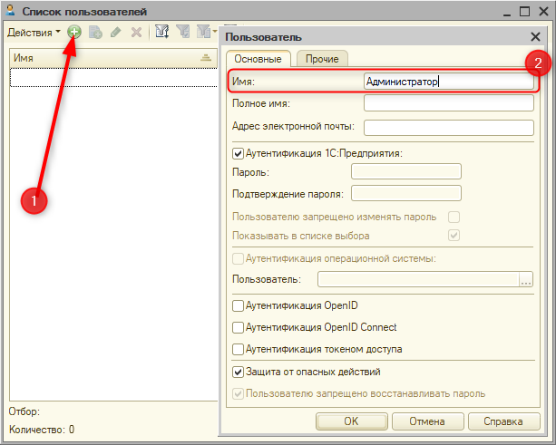
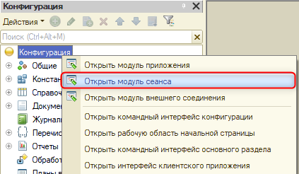
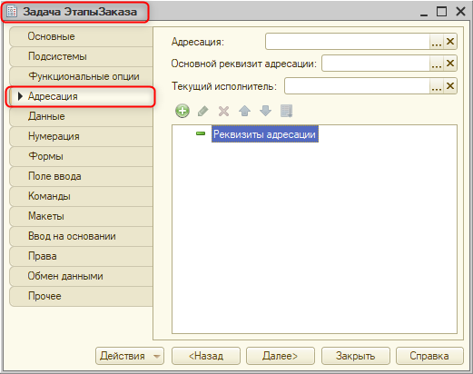
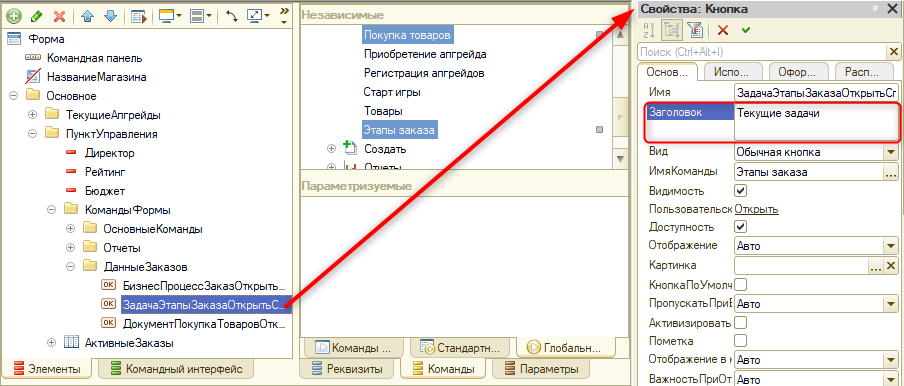
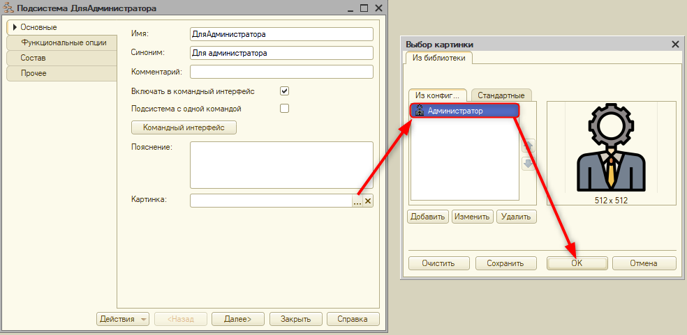

Тема занятия – создание пользователей в системе.
В рамках этого занятия нам потребуется выполнить 4 задачи:
Приступим к первой задаче. Чтобы создать пользователя, необходимо сначала создать для него роль.
Роль – это набор полномочий, который указывает, что может делать пользователь, а что – нет. |
Создавая пользователей, изначально нужно создать администратора. Без него не получится добавить других пользователей.
Для начала добавим роль "Администратор". Развернем ветку "Общие" и, нажав правой кнопкой мыши по ветке "Роли", добавим новую роль. Имя роли – "Администратор" (рис. 16.1).
Рис. 16.1. Добавление роли "Администратор"
Далее приступим к настройке роли. Для роли "Администратор" достаточно поставить две галочки: "Администрирование" и "Администрирование данных" (рис. 16.2).
Рис. 16.2. Настройка прав для роли "Администратор"
В данной системе "Администратор" будет выступать и как администратор, и как пользователь. Следовательно, у него должна быть возможность пользоваться программой, например, выполнять заказы и пополнять список товаров. Таким образом, пользователь "Администратор" будет представлять из себя комбинацию полномочий игрока и администратора.
Именно поэтому роль "Администратор" обладает правами на администрирование системы и данных. Но, по мере добавления объектов, у него будут добавляться права на их использование. Для этого установим галочку "Устанавливать права для новых объектов" (рис. 16.3).
Рис. 16.3. Установка прав для новых объектов
Также необходимо добавить еще одну роль. Имя роли – "Игрок" (рис. 16.4).
Рис. 16.4. Добавление роли "Игрок"
Роль "Игрок" должна представлять из себя совокупность всех прав доступа, кроме администрирования. В данном случае будет удобнее сначала выдать пользователю все права, а потом снять галочки у "Администрирование" и "Администрирование данных". Также необходимо установить галочку напротив свойства "Устанавливать права для новых объектов" (рис. 16.5).
Рис. 16.5. Настройка прав для роли "Игрок"
Вторая задача, которую необходимо реализовать, – это добавить пользователей в систему.
Сейчас пользователи будут добавлены вручную, но в дальнейшем они будут создаваться автоматически при регистрации новых игроков в системе.
Для того чтобы добавить новых пользователей, необходимо сначала обновить конфигурацию базы данных. Если этого не сделать, то при создании пользователей и распределении ролей между ними роли не отобразятся в списке выбора.
После обновления конфигурации базы данных перейдем на вкладку "Администрирование" и выберем в списке "Пользователи" (рис. 16.6).
Рис. 16.6. Переход к списку пользователей
Изначально в системе будут фигурировать два пользователя – "Администратор" и "Тестовый пользователь". Последний будет добавлен лишь для проверки.
В открывшемся окне нажмем на кнопку "Добавить". В качестве имени пользователя укажем "Администратор" (рис. 16.7). Авторизация пользователей будет выполняться средствами платформы "1С:Предприятие" без пароля.
Перейдем на вкладку "Прочее" и выберем обе доступные роли, так как "Администратор" должен администрировать систему и иметь возможность играть (рис. 16.8).
 |
|
Рис. 16.7. Добавление пользователя "Администратор" |
Рис. 16.8. Выбор ролей для пользователя "Администратор" |
Добавим еще одного пользователя. Имя пользователя – "Тест" (рис. 16.9). Перейдем на вкладку "Прочее" и в списке доступных ролей поставим галочку напротив поля "Игрок" (рис. 16.10).
Рис. 16.9. Добавление пользователя "Тест" |
Рис. 16.10. Выбор ролей для пользователя "Тест" |
При запуске игры система будет спрашивать, под каким пользователем необходимо зайти в программу. Запустим режим пользователя и в выпадающем списке выберем "Администратор" (рис. 16.11).
Рис. 16.11. Запуск игры под "Администратором"
В результате система запустилась под пользователем "Администратор". На начальном экране отображаются информация о рейтинге и бюджете этого игрока, список заказов, а также приобретенные им апгрейды (рис. 16.12).
Рис. 16.12. Начальная страница игрока "Администратор"
Закроем пользовательский режим и перезапустим игру под пользователем "Тест" (рис. 16.13).

Рис. 16.13. Запуск игры под тестовым игроком
По задумке, на начальной странице должна отобразиться информация об игроке "Тест": его бюджет, рейтинг, апгрейды и список актуальных заказов. Так как это новый игрок, и данных о нем еще нет в системе, то все эти характеристики должны быть пустыми (рис. 16.14).
Рис. 16.14. Начальная страница игрока "Тест"
Но после запуска пользовательского режима на начальном экране у нас аналогичная картина. Отбор информации на начальный экран выстраивается вокруг параметра сеанса. На данный момент параметр сеанса – фиксированное значение, которое соответствует элементу "Администратор" из справочника "Игроки".
Перейдем в справочник "Игроки" и добавим новую запись о текущем игроке – "Тест". Наименование и код должны совпадать (рис. 16.15).
Рис. 16.15. Создание игрока "Тест"
Третья задача заключается в том, чтобы поменять принцип заполнения параметра сеанса при запуске системы.
Принцип следующий: когда пользователь запускает игру, он запускает ее под конкретным именем, которое можно увидеть в правой верхней части в пользовательском режиме. В момент запуска игры, после выбора пользователя, система должна будет найти в справочнике "Игроки" соответствующую запись и установить значение параметра сеанса как ссылку на ее значение.
Закроем пользовательский режим и вернемся в конфигуратор.
Данная программная логика определена в модуле сеанса. Чтобы туда попасть, нажмем правой кнопкой мыши по "Конфигурации" и выберем в списке пункт "Открыть модуль сеанса" (рис. 16.16).

Рис. 16.16. Переход в модуль сеанса
Изменим программную логику заполнения параметра сеанса.
Первое, что необходимо сделать, – это получить ссылку на текущего игрока из справочника "Игроки". Чтобы понять, что именно нужно искать, получим имя пользователя, запустившего систему.
Это значение будет использоваться для поиска нужного элемента в справочнике "Игроки" по реквизиту "Код".
Обновим конфигурацию базы данных и запустим пользовательский режим под игроком "Тест".
В результате на начальной странице отображаются рейтинг и бюджет, равные нулю, а также пустой список актуальных апгрейдов. Однако директор и список текущих заказов по-прежнему отображаются неверно (рис. 16.17).
Рис. 16.17. Начальная страница игрока "Тест"
Закроем пользовательский режим и вернемся в конфигуратор.
Для начала исправим значение в поле "Директор". Значение константы "Директор" можно заполнить именем пользователя, которое было получено в модуле сеанса.

Каждый раз, когда игру будут запускать разные игроки, на начальной странице будут отображаться разные имена директора.
Обновим конфигурацию и запустим пользовательский режим под пользователем "Тест".
В результате имя директора теперь соответствует имени пользователя, который вошел в игру (рис. 16.18)
Рис. 16.18. Начальная страница игрока "Тест"
Следующее, что необходимо настроить на начальном экране, – это список актуальных заказов. Необходимо для каждой задачи указать, какому игроку она предназначается. Логика будет следующая: в момент открытия магазина будет создаваться задача. В задаче должно быть указано, кому она предназначается, и на основании отбора по игроку будет формироваться список актуальных заказов для каждого игрока.
Закроем пользовательский режим и вернемся в конфигуратор.
Откроем окно редактирования задачи "Этапы заказа" и перейдем на вкладку "Адресация" (рис. 16.19).

Рис. 16.19. Начальная страница игрока "Тест"
Чтобы указать у задачи, какому игроку она предназначена, необходимо создать "Реквизит адресации". Его особенность заключается в том, что, в отличие от обычного реквизита, который просто хранит информацию, реквизит адресации позволяет в дальнейшем создать отбор по исполнителю (игроку).
Добавим новый реквизит адресации. Имя реквизита – "ТекущийИгрок", тип – "СправочникСсылка.Игроки" (рис. 16.20).
Рис. 16.20. Добавление реквизита адресации "ТекущийИгрок"
Далее необходимо связать реквизит адресации, то есть данные по задаче с информацией о том, какой пользователь запустил игру. Информация о пользователе хранится в параметре сеанса.
В поле "Текущий исполнитель" нажмем на кнопку выбора (троеточие) и в открывшемся окне выберем "ТекущийИгрок" (рис. 16.21).
Рис. 16.21. Выбор текущего исполнителя
Также установим связь с основным реквизитом адресации (рис. 16.22).
Рис. 16.22. Выбор основного реквизита адресации
Все эти настройки позволят указать на начальном экране, что список задач нужно выводить только по текущему игроку.
Откроем общую форму "Начальная страница", чтобы сделать соответствующие настройки (рис. 16.23).

Рис. 16.23. Переход к общей форме
На форме "Начальная страница" откроем палитру свойств реквизита "Активные заказы" и на вкладке "Объект" нажмем на кнопку "Открыть" напротив настройки списка (рис. 16.24).
Рис. 16.24. Переход к настройкам списка
Для отображения текущих задач игрока потребуется изменить таблицу, из которой считывается информация. Сейчас информация считывается по наименованию, товару и его количеству, а также по итогу этапа заказа из таблицы "Задача.ЭтапыЗаказа".
Нажмем на кнопку "Конструктор запроса", чтобы изменить логику формирования списка актуальных заказов (рис. 16.25).
Рис. 16.25. Переход к конструктору запроса
Если развернуть группировку, то можно увидеть, что теперь в запросе можно обращаться к двум таблицам: "ЭтапыЗаказа" и "ЭтапыЗаказа.ЗадачиПоИсполнителю" (рис. 16.26).
Рис. 16.26. Список задач в конструкторе запроса
"ЭтапыЗаказа.ЗадачиПоИсполнителю" – это таблица, в которой происходит отбор по исполнителю, информация о котором хранится в параметре сеанса.
В запросе необходимо получить информацию о наименовании задачи, товаре, количестве товара и итоге по задаче из таблицы "ЭтапыЗаказа.ЗадачиПоИсполнителю" (рис. 16.27).
Рис. 16.27. Выбор полей для запроса
После выбора полей нажмем на кнопку "ОК". Следующее, что необходимо сделать, – это изменить заголовки колонок в тексте запроса (рис. 16.28).

Рис. 16.28. Изменение заголовков колонок
На начальной странице необходимо выводить только актуальные заказы. Перейдем на вкладку "Настройки" и выберем "Отбор". Отбор записей должен выполняться по полю "Выполнена" в значении "Ложь" (рис. 16.29).
Рис. 16.29. Настройка отбора
Обновим конфигурацию базы данных и запустим пользовательский режим под игроком "Тест".
В результате видим, что в списке текущих задач для игрока "Тест" пусто (рис. 16.30).
Рис. 16.30. Начальная страница игрока "Тест"
Однако, если перейти к списку всех этапов заказа, то все задачи будут на месте. Так как реквизит адресации "Текущий игрок" был добавлен после создания в базе всех заказов, то он везде не будет заполнен (рис. 16.31).
Рис. 16.31. Список этапов заказа
Вернемся на начальную страницу и откроем магазин (рис. 16.32).
Рис. 16.32. Ожидание заказов
По истечению десяти и даже двадцати секунд новых заказов в этом списке не появится. Но если вернуться к списку этапов заказа и обновить его, то новые задачи отобразятся, и в них также не будет указан исполнитель (рис. 16.33).
Рис. 16.33. Список этапов заказа
Необходимо доработать создание задач.
Закроем пользовательский режим и вернемся в конфигуратор.
Перейдем в модуль объекта "Этапы заказа", чтобы описать алгоритм заполнения реквизита адресации (рис. 16.34).
Рис. 16.34. Переход в модуль объекта этапов заказа
В момент появления новой задачи необходимо дозаполнять реквизит адресации и указывать, что он равен информации из параметра сеанса. Для реализации этого алгоритма подойдет обработчик "ПередЗаписью".
Добавим новый обработчик, нажав на кнопку "Процедуры и функции" и выбрав в списке обработчик "ПередЗаписью" (рис. 16.35).
Рис. 16.35. Создание обработчика события "ПередЗаписью"
Перед записью задачи необходимо указать, что реквизит адресации должен заполняться, только если создается новая задача. Такую проверку можно осуществить с помощью метода "ЭтоНовый". Данный метод проверяет, есть ли у элемента ссылка. Если ссылки нет и создается новая задача, то укажем текущего игрока.
Обновим конфигурацию базы данных и запустим пользовательский режим под пользователем "Тест".
Откроем магазин, чтобы проверить только что реализованный функционал (рис. 16.36).
Рис. 16.36. Начальная страница с новой задачей для текущего игрока
В результате в списке появилась новая задача. Если сейчас открыть список этапов заказа, то у последней задачи будет указан исполнитель "Тест" (рис. 16.37).

Рис. 16.37. Список этапов заказа с новой задачей для текущего игрока
Однако тестовый игрок сейчас не сможет выполнить ни один заказ, поскольку у него нет денег. В дальнейшем создание пользователей будет происходить интерактивно по следующему алгоритму: игрок включает игру и указывает, что хочет создать нового пользователя в системе, далее вводит логин для этого пользователя. На основании логина в системе создается запись о пользователе, и ему сразу начисляется стартовый бюджет. Весь этот алгоритм будет реализован на следующем занятии через форму регистрации.
Сейчас же необходимо выполнить четвертую задачу, а именно сделать несколько доработок для формы начального экрана.
На начальный экран необходимо вынести команду для приобретения апгрейдов, а также команды, которые позволят игроку просматривать список заказов, текущие задачи и покупать новые товары.
Все команды, которые сейчас мы наблюдаем в режиме пользователя сверху, будут отображены в виде отдельных кнопок. При этом список апгрейдов, товаров и их видов игрок видеть не будет. Вся верхняя панель будет убрана из интерфейса игрока.
Закроем режим пользователя и вернемся в конфигуратор.
Первое, что необходимо сделать, – это открыть начальную страницу (рис. 16.38).
Рис. 16.38. Переход к начальной странице
В раздел "Основные" добавим команду для покупки апгрейдов. Это стандартная команда для функционала системы. Перейдем на вкладку "Глобальные команды" и найдем в списке команду для создания нового документа "Приобретение апгрейда". Добавим эту команду на форму (рис. 16.39).
Рис. 16.39. Добавление новой команды на форму
В качестве заголовка команды укажем "Купить апгрейд" (рис. 16.40).
Рис. 16.40. Изменение заголовка команды
Также необходимо визуально выделить кнопку "Открыть магазин" (рис. 16.41).
Рис. 16.41. Кнопка по умолчанию
Добавим еще одну группу в уже существующую группу "КомандыФормы". Тип создаваемого элемента – "Группа – Обычная группа", в которой будут располагаться команды для быстрого перехода к спискам заказов, текущих задач и покупке товаров (рис. 16.42). Имя группы – "ДанныеЗаказов", группировка – "Вертикальная" (рис. 16.43).
Рис. 16.42. Добавление новой команды |
Рис. 16.43. Настройка группы "ДанныеЗаказов" |
В эту группу необходимо добавить команды для перехода к списку заказов, задач и покупок товаров. Их можно найти на вкладке "Глобальные команды" в разделе "Обычное" (рис. 16.44).
Рис. 16.44. Добавление новых команд на форму
Определим заголовки для команд. Для команды "Заказ" – "Список заказов", "Этапы заказа" – "Текущие задачи" (рис. 16.45 – 16.46).
Рис. 16.45. Изменение заголовка команды "Заказы"

Рис. 16.46. Изменение заголовка команды "Этапы заказа"
Следующая настройка, которую необходимо выполнить в интерфейсе, – это визуально выделить группы с командами для игрока.
Для этого выделим все три группы и в палитре свойств укажем в свойстве "Отображение" – "Сильное выделение" (рис. 16.47).
Рис. 16.47. Изменение отображения групп
Теперь группы разделены зеленой линией. Но данное цветовое оформление можно изменить.
Чтобы изменить цветовое оформление программы, потребуется создать стиль.
Стиль – механизм, позволяющий настроить оформление программы. |
Добавим новый стиль. Данный механизм располагается в ветке "Общие" (рис. 16.48).
Рис. 16.48. Добавление нового стиля
В открывшемся окне укажем имя стиля, например, "Мой стиль" (рис. 16.49).
Рис. 16.49. Настройка имени стиля
В этом окне можно поэкспериментировать с настройками цветов различных разделов интерфейса и сразу увидеть результат.
Вариант цветового оформления для данной программы представлен на рисунке 16.50.
Рис. 16.50. Настройка стиля
|
Больше вариантов для выбора цвета можно найти на вкладке "web" при выборе цвета. |
Осталось применить стиль к создаваемой системе. Для этого необходимо указать основной стиль оформления программы в свойствах конфигурации (рис. 16.51).
Рис. 16.51. Выбор основного стиля для конфигурации
Обновим конфигурацию базы данных и запустим пользовательский режим.
В результате система выглядит по-другому (рис. 16.52).

Рис. 16.52. Пользовательский режим после применения стиля
В интерфейсе сначала идет группа с отчетами, а только потом – команды для перехода к данным заказов. Пользователю будет удобнее, если поменять местами две эти группы.
Закроем пользовательский режим и вернемся в конфигуратор.
На общей форме "Начальная страница" изменим порядок групп (рис. 16.53).
Рис. 16.53. Изменение порядка групп
Следующее, что будет реализовано в рамках этого занятия, – разграничение функционала между пользователем и администратором.
Для реализации такого разграничения создадим подсистему, в которую будет включен весь функционал программ, и ограничим видимость этой подсистемы для пользователя.
Добавим новую подсистему, ее можно найти в ветке "Общие", назовем ее "ДляАдминистратора" (рис. 16.54).
Рис. 16.54. Добавление подсистемы "ДляАдминистратора"
В этом же окне для красоты можно указать картинку для подсистемы. Но перед этим картинку нужно добавить.
В ветке "Общие" найдем раздел "Общие картинки" и добавим новую картинку. Имя картинки – "Администратор" (рис. 16.55). Далее необходимо нажать на кнопку "Выбрать из файла" и в проводнике выбрать нужную картинку (рис. 16.56).
Рис. 16.55. Добавление картинки "Администратор" |
Рис. 16.56. Выбор картинки из проводника |
Теперь можно указать эту картинку для подсистемы (рис. 16.57).

Рис. 16.57. Выбор картинки для подсистемы
Далее необходимо определить состав подсистемы. Для этого перейдем на вкладку "Состав" и проставим галочки у всех констант, справочников, документов, отчетов, регистров сведений, регистров накопления, бизнес-процессов и задач (рис. 16.58).

Рис. 16.58. Выбор объектов для подсистемы
Перейдем к настройке роли "Игрок". В ветке "Общие" развернем список ролей и откроем окно настройки прав доступа роли "Игрок". У данной роли необходимо снять права на просмотр подсистемы "ДляАдминистратора" (рис. 16.59).
Рис. 16.59. Настройка роли "Игрок"
Благодаря этой настройке пользователи с ролью "Игрок" не будут видеть всего функционала программы.
Обновим конфигурацию базы данных и запустим пользовательский режим под игроком "Тест" (рис. 16.60).
Рис. 16.60. Начальный экран
В результате игрок больше не видит команд для перехода к функционалу, но при этом поле, в котором этим команды должны были отображаться, осталось.
Закроем пользовательский режим и вернемся в конфигуратор.
Обратимся к свойствам конфигурации и отроем интерфейс клиентского приложения (рис. 16.61). В открывшемся окне уберем "Панель функций текущего раздела" с помощью кнопки "Удалить" (рис. 16.62).
|
|
Рис. 16.61. Переход к интерфейсу клиентского приложения |
Рис. 16.62. Настройка интерфейса клиентского приложения |
Обновим конфигурацию базы данных и запустим пользовательский режим.
Так у обычного игрока не будут отображаться лишние команды в пользовательском режиме (рис. 16.63).

Рис. 16.63. Финальный вариант интерфейса игрока
Перезапустим систему под пользователем "Администратор" (рис. 16.64).
Рис. 16.64. Запуск системы под пользователем "Администратор"
В свою очередь, администратор будет иметь доступ к разделу "Для администратора", где расположены все необходимые для настройки игры объекты (рис. 16.65).
Рис. 16.65. Раздел "Для администратора"
На этом шестнадцатое занятие окончено!
На этом занятии мы завершили разработку механизма, который позволит разделить игру на пользователей.
На следующем занятии мы реализуем форму для регистрации новых игроков в системе.
Это нужно запомнить |
|
|
Роль – это набор полномочий, который указывает, что может делать пользователь, а что – нет. Стиль – механизм, позволяющий настроить оформление программы. |